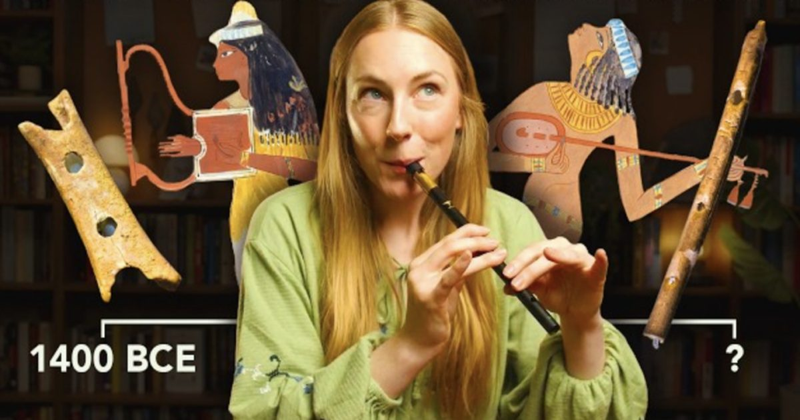

Принципы доказательного ухода за кожей: как не потеряться в обещаниях
Рынок косметики полон громких заявлений, но далеко не все из них опираются на надежные данные. Понимание того, как оценивать эффективность ингредиентов и процедур, помогает построить безопасную и рациональную рутину без лишних затрат.
Почему стоит опираться на научные данные
Доказательная косметология опирается на результаты контролируемых исследований, а не на отзывы в соцсетях или рекомендации блогеров. Это означает, что эффективность компонента или методики проверялась в условиях, исключающих плацебо и субъективную ошибку. Для потребителя ключевым критерием становится наличие ссылок на независимые клинические испытания с открытой методологией и опубликованными результатами в рецензируемых изданиях.
Отсутствие данных не всегда говорит о бесполезности средства — иногда исследования не проводились из-за их высокой стоимости или сложности протокола. Однако пробел в доказательной базе требует осторожности: не стоит ждать от такого продукта выраженного клинического эффекта. Разумная стратегия — строить базовый уход на компонентах с подтвержденной активностью и относиться к новинкам как к возможному дополнению, а не к фундаменту ухода.

Как анализировать составы и формулы
Порядок ингредиентов в списке INCI отражает их массовую долю, но эффективность зависит не только от наличия вещества, но и от его концентрации, формы доставки, pH среды и сочетания с другими компонентами. Упоминание популярного ингредиента на упаковке без указания этих параметров не гарантирует результат, так как актив может находиться в нерабочей дозе или нестабильной форме.
Маркетинг часто подменяет понятия: наличие в составе гиалуроновой кислоты может означать использование высокомолекулярного полимера, работающего только на поверхности, тогда как низкомолекулярные формы способны проникать глубже. Производители редко раскрывают молекулярный вес или технологию инкапсуляции на потребительской упаковке. Понимание этих нюансов позволяет не переплачивать за красивую фразу, а искать продукты, где бренд открыто делится технологическими деталями.

Что спрашивать специалиста перед процедурой
Аппаратные методики — лазерная терапия, фотоомоложение, радиоволновый лифтинг, микронидлинг — имеют разные механизмы действия, показания и профили безопасности. Доказательная база для каждой из них неоднородна: для некоторых методов накоплено достаточно данных, для новых направлений — только предварительные наблюдения. Перед курсом важно уточнить у врача: какие протоколы используются, на каком оборудовании, какова частота сеансов и ожидаемое время восстановления.
Криолиполиз, вакуумно-роликовый массаж, инъекционные техники решают разные задачи и не взаимозаменяемы. Криолиполиз воздействует на жировую ткань через контролируемое охлаждение, массаж — на лимфодренаж и плотные перегородки, инъекции — на доставку веществ в дерму или модуляцию мышечной активности. Смешение понятий ведет к нереалистичным ожиданиям. Компетентный специалист всегда проведет анамнез, исключит противопоказания и предложит план лечения, а не разовую услугу «для пробы».
Строим систему ухода: от базы к целям
Базовый уход — очищение, увлажнение, фотозащита — создает условия для работы любых активов. Мягкое очищение не повреждает защитный барьер, крем с физиологическим набором липидов восстанавливает его целостность, а широкоспектральный солнцезащитный препарат превентирует фотостарение и пигментацию. Без этих шагов введение активных компонентов часто приводит к раздражению вместо улучшения качества кожи.
Целевые средства вводятся последовательно, с интервалом для оценки переносимости. Ретиноиды, кислоты, ниацинамид, пептиды, антиоксиданты — у каждого своя ниша действия и правила применения. Порядок нанесения: от легких текстур к насыщенным, с учетом pH активов. Домашний уход и кабинетные процедуры должны согласовываться: после инвазивных воздействий акцентируют внимание на восстановлении барьера, откладывая агрессивные компоненты. Регулярная фотофиксация в одинаковых условиях помогает объективно оценить динамику и скорректировать схему вовремя.
Коротко: Доказательная косметология — это способ мышления: проверять источники, понимать механизмы, строить систему и консультироваться с врачом. Базовый уход и фотозащита создают фундамент, целевые активы и процедуры дополняют его при грамотном подборе.
Какой принцип подбора средств или процедур помог вам избежать разочарования и сэкономить ресурсы?